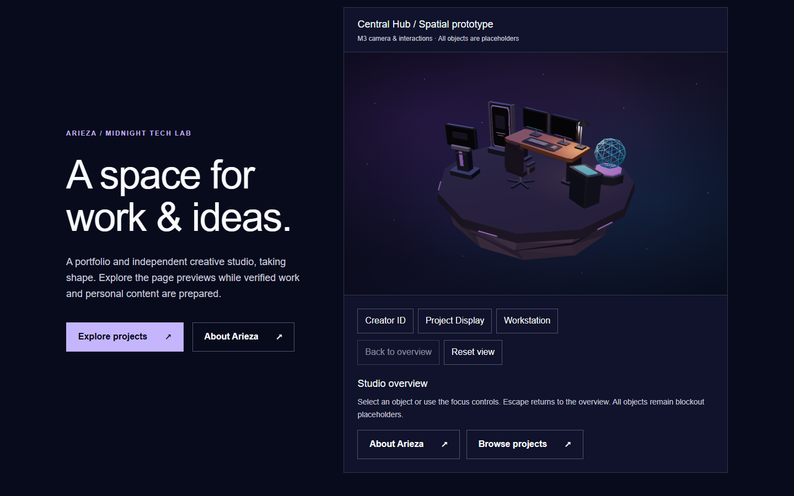
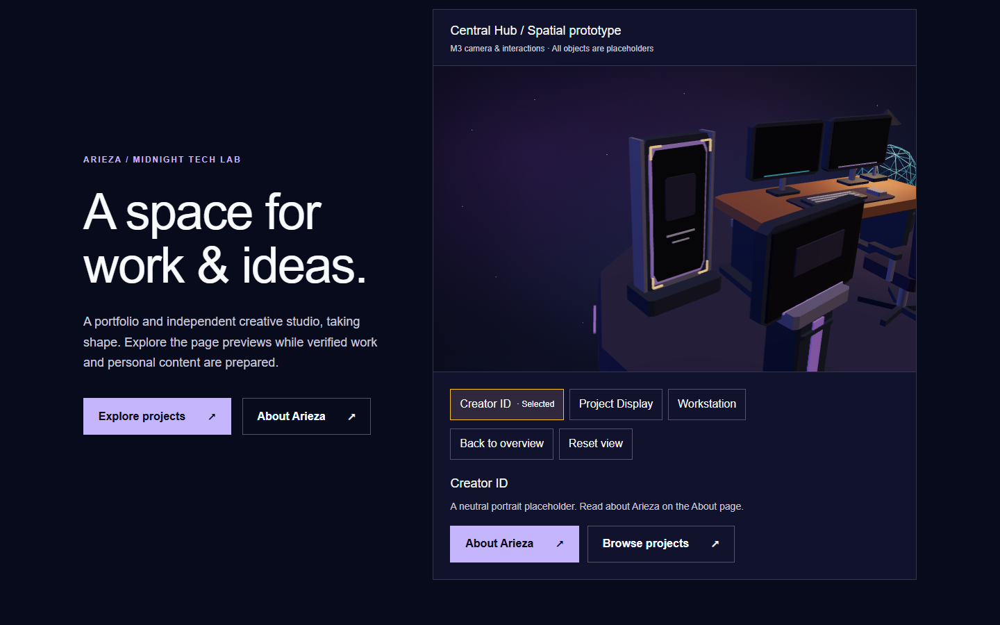
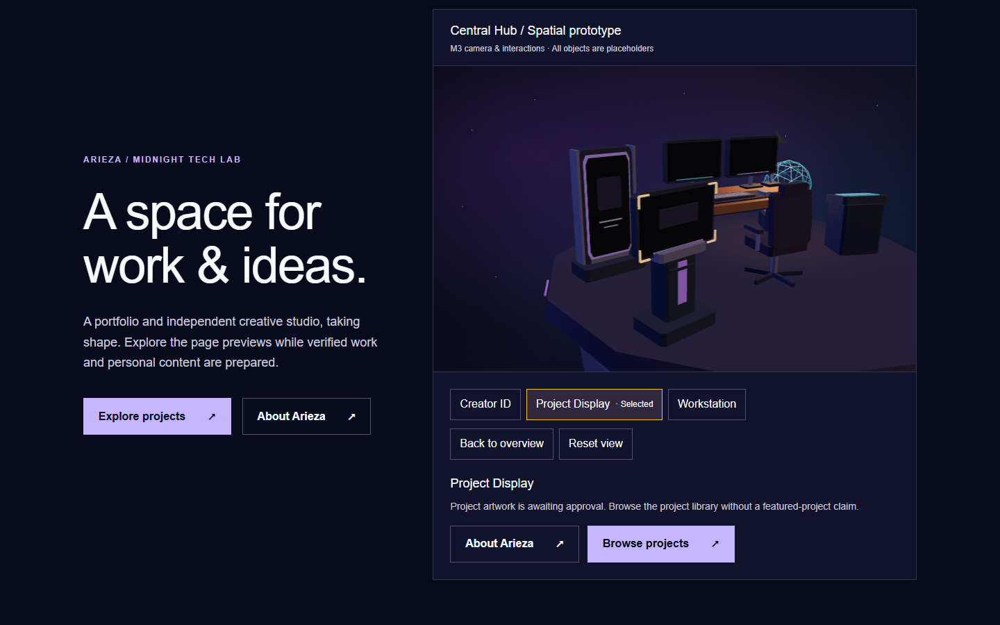
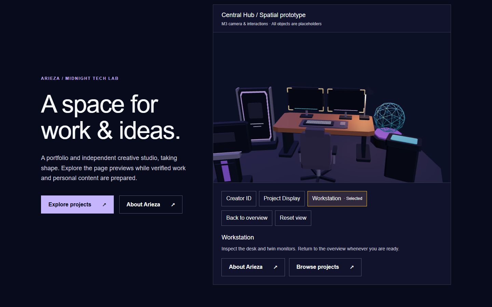
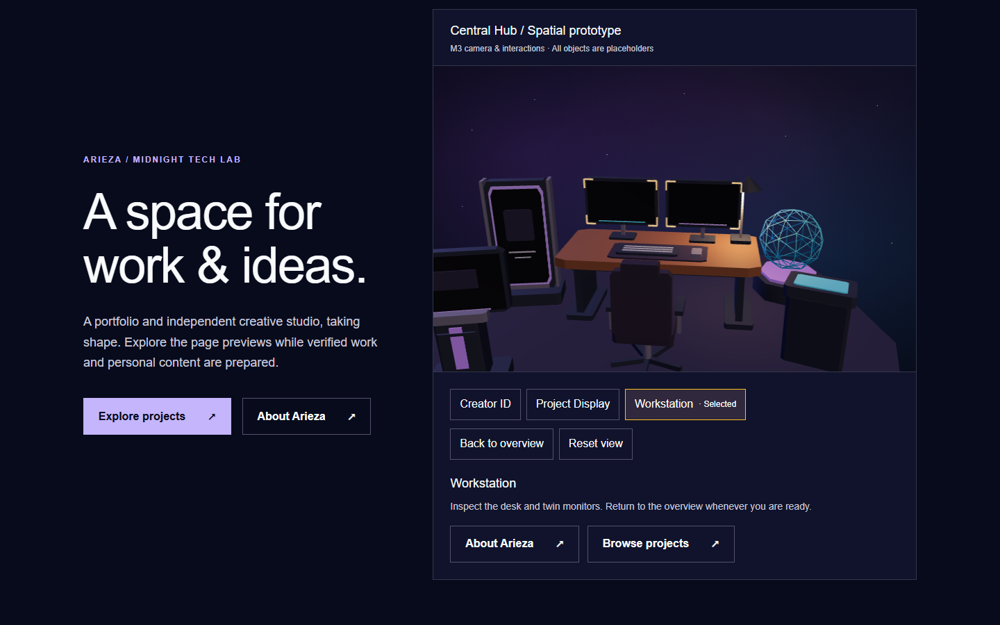

Central Hub — M5-B lighting & atmosphere review
Fresh accepted-M5-A baseline (left) and M5-B lighting/atmosphere (right). Same 1440×900 viewport, geometry and camera values. Prototype materials and blank displays; no final visual approval implied.
Overview
Before — M5-A After — M5-B
After — M5-B
Creator ID
Before — M5-A framing After — display lighting
After — display lighting
Project Display
Before — M5-A plinth After — lighting and materials
After — lighting and materials
Workstation
Before — M5-A workstation
After — warm key and cool fill
Baseline measurements · After measurements